TOMSK
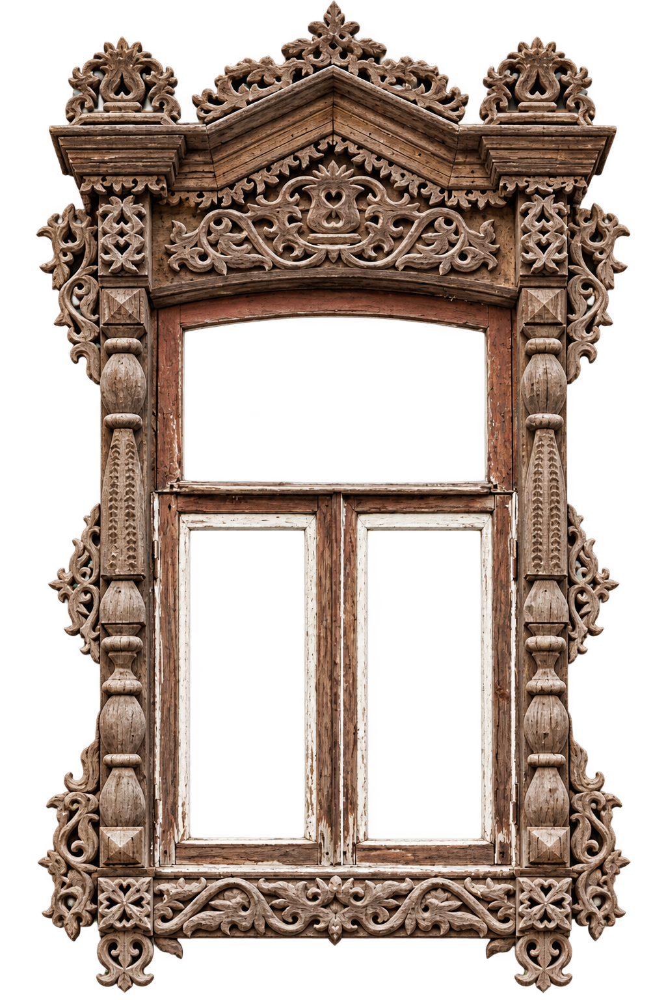
Ornate Designs and Wooden Lace
Distinctive features include carved curtain-like details, floral garlands, rosettes, and richly decorated upper window frames.
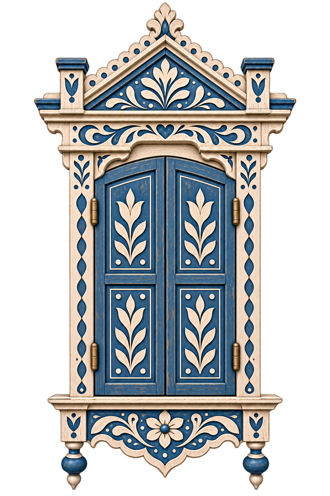
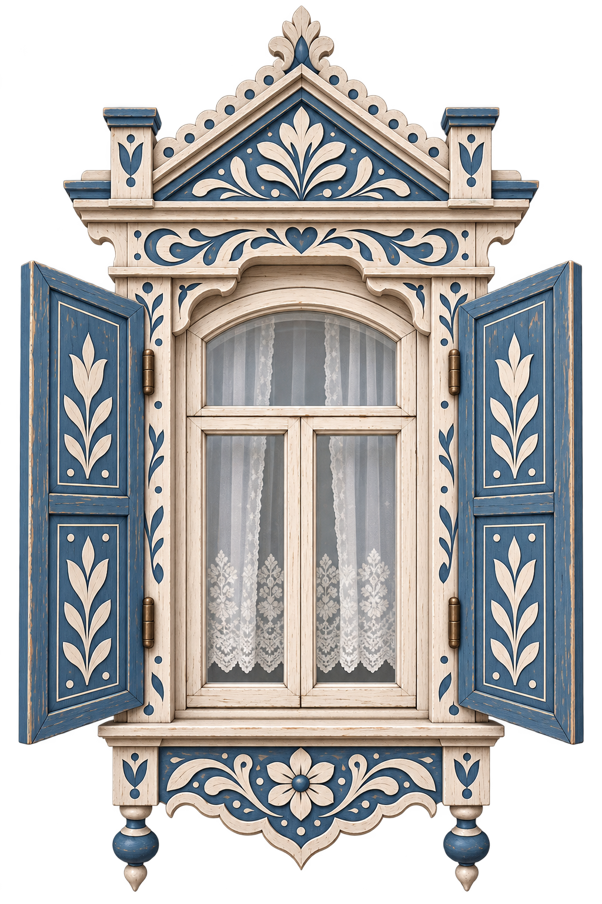
AN EXPLORATION OF RUSSIAN WOODEN ARCHITECTURE
Discover the hidden stories, symbols, and traditions behind Russia's beautifully carved wooden windows.
EXPLORE THE ORNAMENTS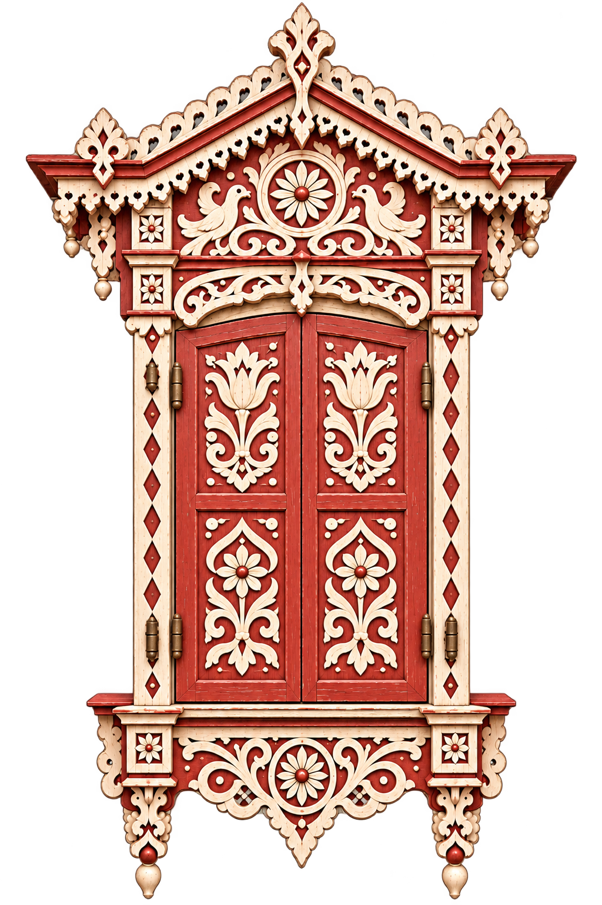
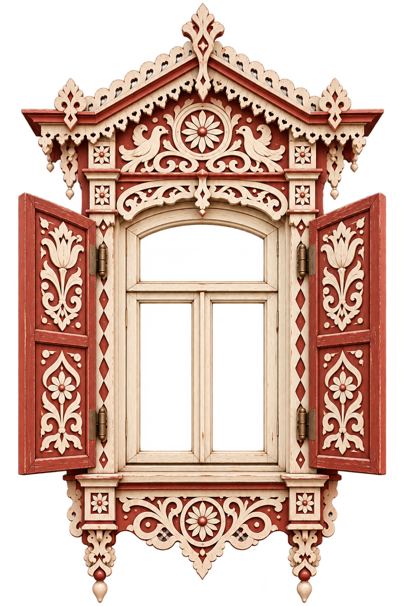
02 / ORNAMENTS
Every carved detail has its own meaning. Explore the ornamental patterns found on traditional Russian windows.
01 / 03
Floral motifs feature carved flowers, leaves and flowing stems. Their organic shapes create decorative patterns across traditional wooden window frames.
← BACK TO ORNAMENTS03 / 03
Geometric motifs feature carved shapes such as triangles, diamonds, squares, and symmetrical patterns. These repeating designs create rhythm, balance, and structure in traditional Russian wooden window decorations.
← BACK TO ORNAMENTS02 / 03
Rosette motifs feature circular, flower-like patterns with petals radiating from the center. These symmetrical designs create a sense of harmony and are often used as decorative elements in traditional Russian wooden window frames.
← BACK TO ORNAMENTSSELECT A CITY TO DISCOVER ITS TRADITIONAL WOODEN WINDOW ORNAMENTS.
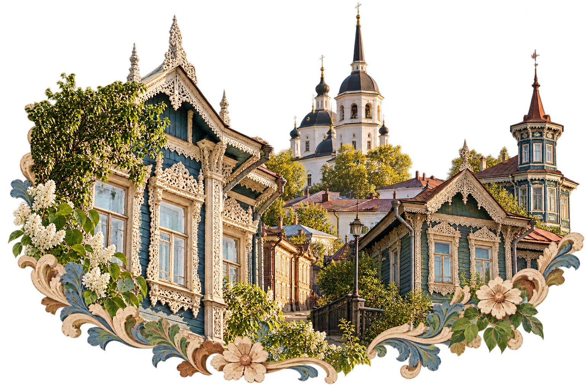
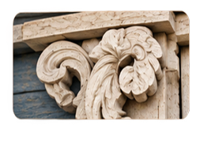
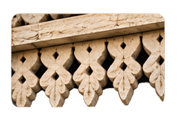
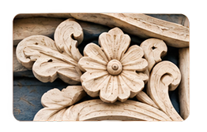
A SIBERIAN CITY KNOWN FOR ITS HISTORIC WOODEN ARCHITECTURE AND RICHLY DECORATED WINDOW FRAMES.
EXPLORE THE INTRICATE WOODCARVING DETAILS FOUND ON TRADITIONAL HOUSES IN TOMSK.
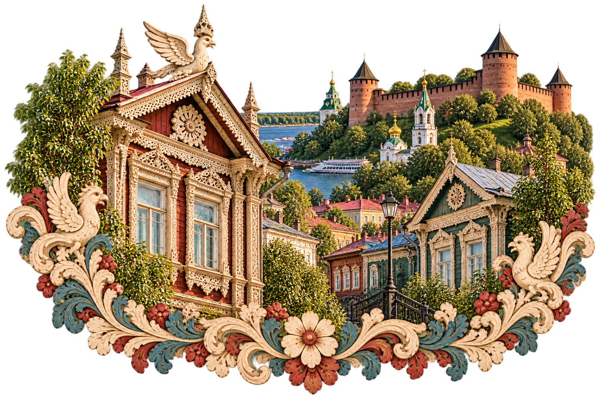
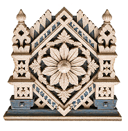
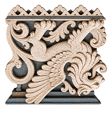
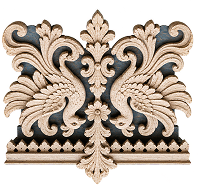
A HISTORIC RUSSIAN CITY KNOWN FOR ITS RICH TRADITIONS OF WOODEN ARCHITECTURE AND DECORATIVE CARVING.
DISCOVER THE DEEPLY CARVED ORNAMENTS, FLORAL PATTERNS, AND INTRICATE DETAILS FOUND IN TRADITIONAL WOODEN HOUSES.
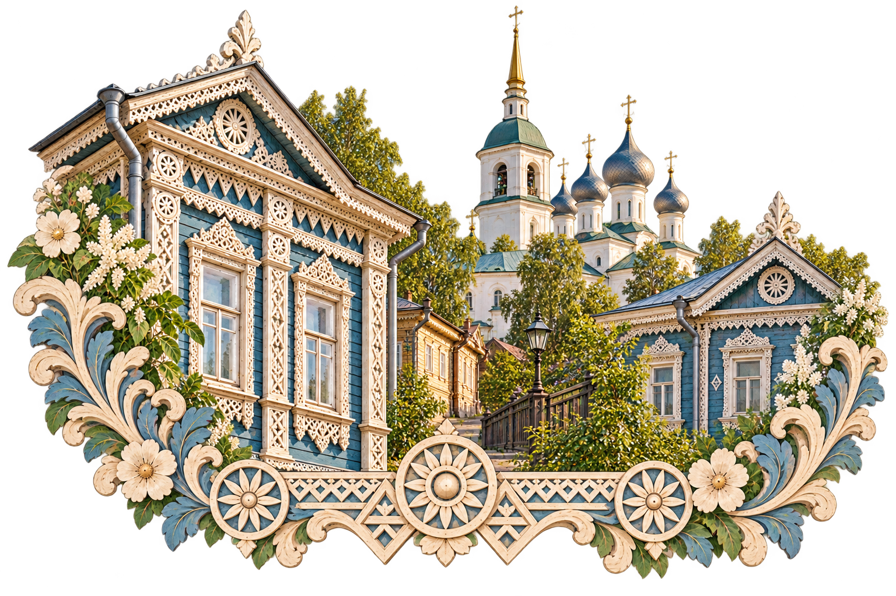
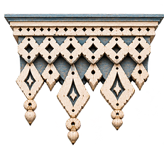
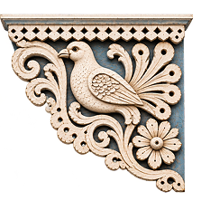
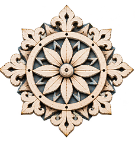
A HISTORIC CITY IN NORTHERN RUSSIA KNOWN FOR ITS TRADITIONAL WOODEN ARCHITECTURE AND DECORATIVE WINDOW FRAMES.
EXPLORE THE DELICATE WOODCARVING DETAILS, GEOMETRIC PATTERNS, AND ORNAMENTAL DESIGNS FOUND ON TRADITIONAL HOUSES IN VOLOGDA.
Discover how similar ornaments take different forms across regions.
SCROLL EACH WINDOW TO SELECT A REGION
COMPARE ORNAMENTS →Discover how local traditions, history, and craftsmanship shaped Russia's wooden window decorations.

Distinctive features include carved curtain-like details, floral garlands, rosettes, and richly decorated upper window frames.
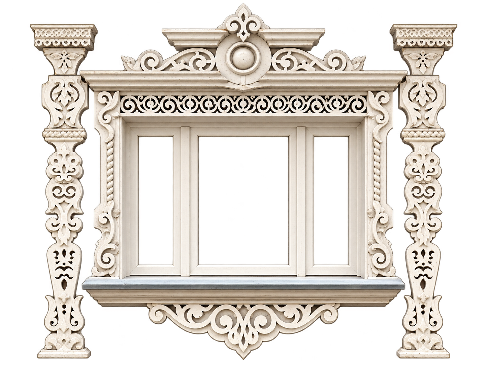
The main feature is the tradition of solid relief carving, also known as ship carving. Patterns are carved into the wood rather than cut all the way through. Common motifs include mythical birds and fantastical creatures.
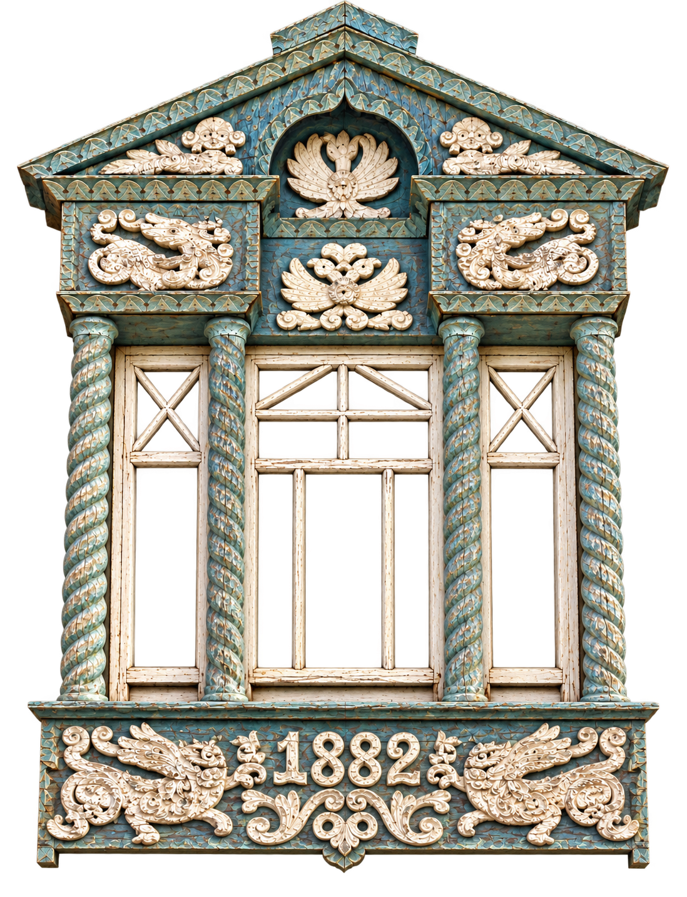
The northern tradition is characterized by simpler compositions, geometric patterns, and solar symbols. However, richly decorated window frames can also be found.
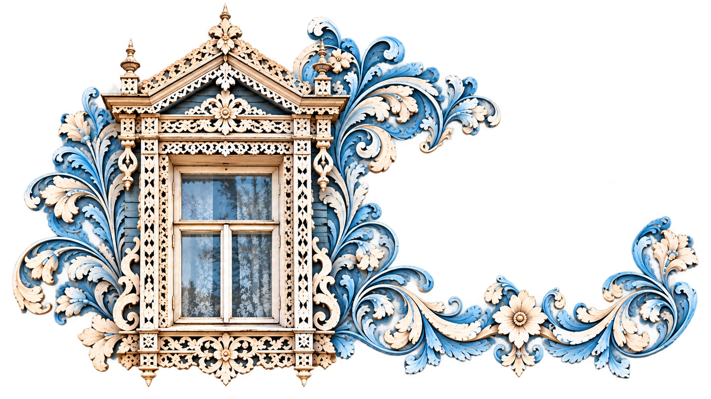
Different regions. Different details.
One rich architectural heritage.